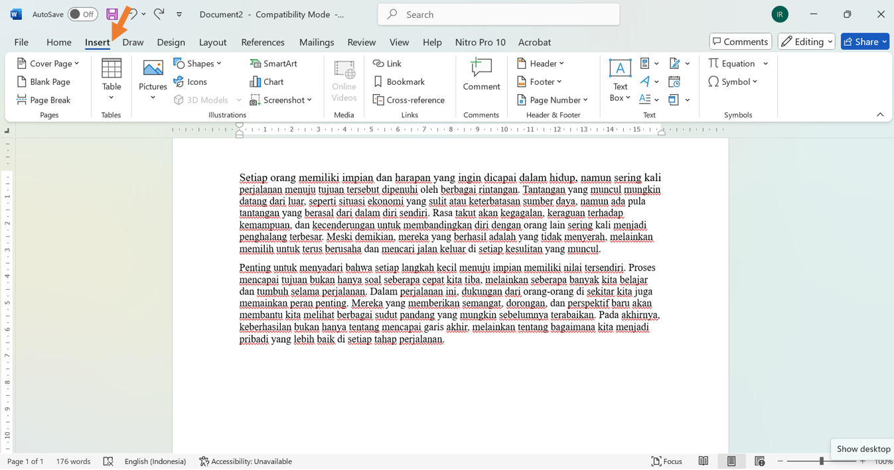
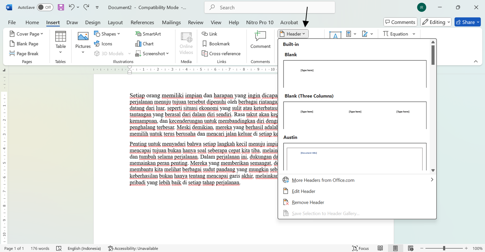
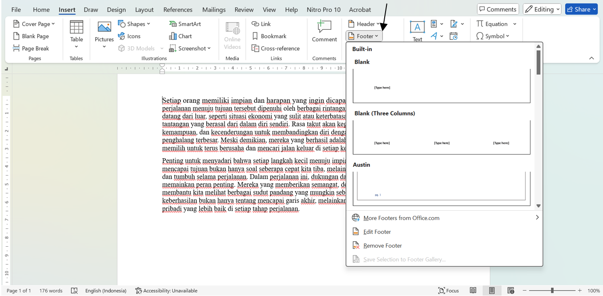
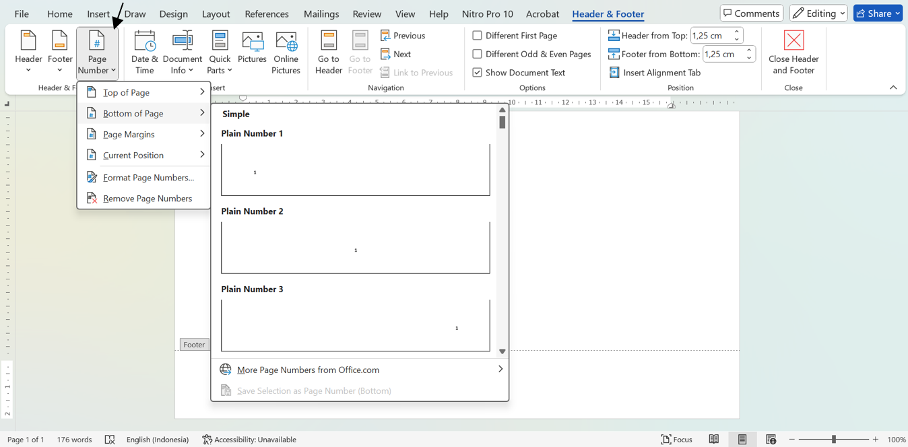
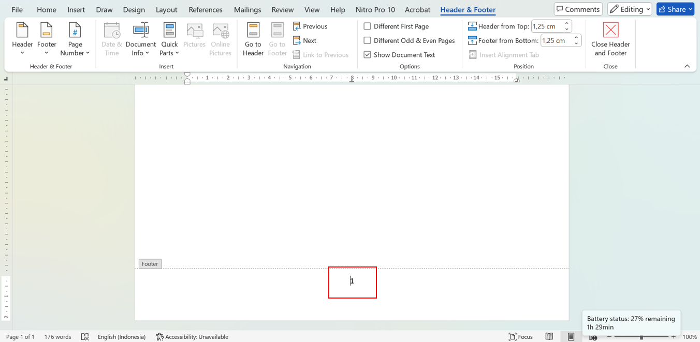

Nomor halaman adalah elemen penting dalam dokumen, terutama untuk laporan, buku, atau dokumen resmi lainnya. Dengan menambahkan nomor halaman, pembaca dapat dengan mudah menavigasi dan memahami struktur dokumen Anda. Salah satu cara paling umum untuk menambahkan nomor halaman adalah dengan menggunakan fitur Header dan Footer pada aplikasi pengolah kata seperti Microsoft Word, Google Docs, atau lainnya. Dalam tutorial ini, Anda akan mempelajari langkah-langkah sederhana dan praktis untuk membuat nomor halaman menggunakan Header dan Footer. Panduan ini cocok untuk pemula yang ingin mempercantik dokumen sekaligus meningkatkan profesionalisme hasil kerja mereka. Mari kita mulai!
Cara Membuat Nomor Halaman menggunakan Header dan Footer
1. Letakan kursor pada awal teks
2. Klik insert pada tab menu
3. Klik Header (Jika menggunakan header) atau
4. Footer (Jika menggunakann footer)
5. Lalu klik page number dan pilih letak nomor halaman yang akan digunakan
Contoh hasil jika menggunakan Bottom of Page maka akan menghasilkan tampilan sebagai berikut
